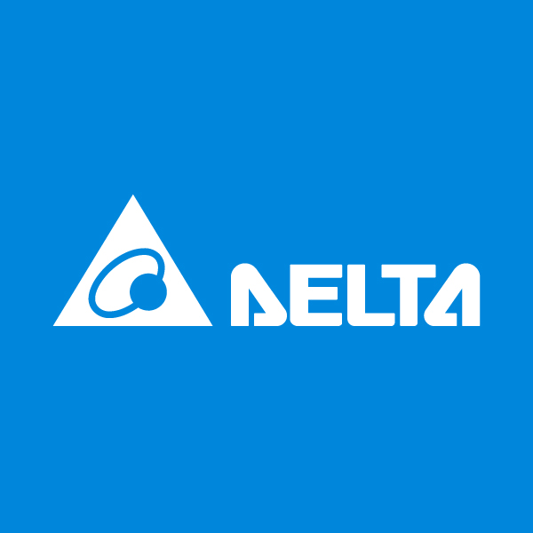

Working Experience
Applied Scientit II, Amazon RBKS AI
2026/03 – current
- Reading docs...

Senior Associate Researcher, Delta Robotics Innovation Center
2025/08 – 2026/01
- Develop digital-twin and 3D reconstruction pipeline for robotics projects.
- Be the PI or co-PI in the collaborative projects with university labs.
ML Research Intern, Sony Group Corporation
2023/10 – 2024/03
- Join and lead the research project on reinforcement learning with LLM guidance.
- Join the discussion on developing ML solutions for business-scale advertisement tasks.